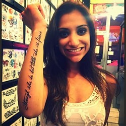
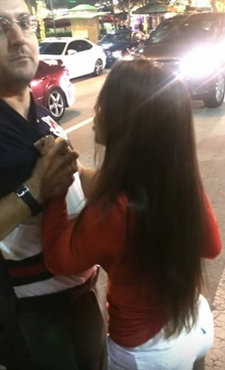

Dr. Anjali Ramkissoon- Facts to Know About
A neurology resident, employed by the Jackson Health System, has been placed on administrative leave after a controversial video involving an Uber driver went viral.
According to a statement from Jackson Health, Dr. Anjali Ramkissoon, a fourth-year resident, has been placed on leave, effective immediately, and removed from all clinical duties.
The statement also says an internal investigation has been launched, and the outcome will determine whether any disciplinary action will be taken.
The incident reportedly started when Ramkissoon got into an Uber vehicle without a reservation and refused to get out.
A video was uploaded to YouTube on Tuesday, showing Ramkissoon in a confrontation with the Uber driver in Brickell, which reportedly happened on Sunday.

The video shows the Uber driver asking witnesses to call 911, as he held Ramkissoon's wrists, because he believed she was getting violent. The video shows a scuffle between the two, with Ramkissoon hitting the driver.
Then it shows her kicking the driver, and him pushing her to the ground.
Ramkissoon got up, got into the Uber vehicle and began throwing items, which included a scissors and his cellphone, out of his car and into the street.
After several minutes, she eventually got out and walked away.

Uber released the following statement regarding the incident:
"Uber expects everyone associated with the platform - both drivers and riders - to conduct themselves with a shared level of respect and common courtesy, and all forms of harassment and abuse are not tolerated.
We have suspended the rider account of this individual as we investigate the incident."
THE BACKGROUND
Anjali Ramkissoon is a 30-year-old fourth-year neurology resident employed by Jackson Health System in Miami.
On Sunday, January 17th, 2016, she went out drinking, called for an Uber car, and when a different passenger's Uber car arrived she tried to commandeer it, taking the driver's keys, tried to punch him in the face, then kneed him in the groin and tried to destroy his car, all the while showing the brattiest, rudest, most entitled behavior possible.
In full view of a video camera she bullied him and mocked him for being powerless to stop it.
The video of the event has become an Internet sensation and her employer has placed her on administrative leave.
HOW TO CONTACT ME? or Driver

http://goo.gl/forms/xDdFBcycfP
Want to say something?
Rate and Review or Drop a suggestion Mail - pictodeveloper@gmail.com
Rate and Review or Drop a suggestion Mail - pictodeveloper@gmail.com